Chaque tutoriel se fait dans le simulateur, en suivant les étapes numérotées. Les tutoriels interactifs T1 à T5 (TP → onglet Tutoriels) vérifient vos gestes automatiquement ; ce livret les complète et sert de support papier en salle.
Repérez les quatre zones : barre supérieure (fichiers, modes, pluie, TP, examen, documentation), boîte à outils à gauche, canevas au centre (avec le journal, la console et les flux en dessous), inspecteur à droite.
Chargez un réseau : TP → TP 6 → Charger la topologie du TP. Faites défiler la molette (zoom), faites glisser le fond (déplacement), touche 0 (tout afficher).
Cliquez sur un faisceau : l’inspecteur affiche ses Paramètres, son Bilan de liaison, son Profil & Fresnel et la vue Réseau.
La barre supérieure : Nouveau, Ouvrir, Sauvegarder, image ; les trois modes ; le curseur de pluie ; TP, Examen, Documentation.
À retenir : vert = modulation maximale, orange = repli (pluie, dépointage, obstacle), rouge = coupure. La barre d’état (en bas) résume la santé du réseau.
MicroWave, BLR & VSAT Lab — Tutoriels2
Tutoriel 2 — Poser et relier les équipements
Durée : 20 minObjectif : construire un bond FH complet
Glissez deux Pylônes sur le canevas, à au moins 5 carreaux d’écart (échelle : 1 carreau = 2 km par défaut).
Déposez une Antenne parabolique sur chaque pylône : elle s’y fixe (hauteur et altitude du site).
Ajoutez une ODU derrière chaque antenne et une IDU au pied de chaque pylône.
Outil Lier (L) : IDU → ODU (câble IF), ODU → antenne, puis antenne → antenne (le faisceau). Le type de lien est déduit automatiquement.
Tirez la poignée au sommet d’un pylône pour changer sa hauteur (15 à 150 m).
Chaîne FH : IDU — câble IF — ODU — antenne ~~~ antenne — ODU — IDU. Un maillon manquant est signalé (« ODU non alimentée »…).
Question : quel équipement porte la fréquence et la puissance d’émission ?
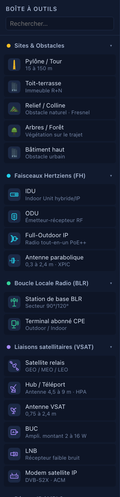
La boîte à outils (familles d’équipements).
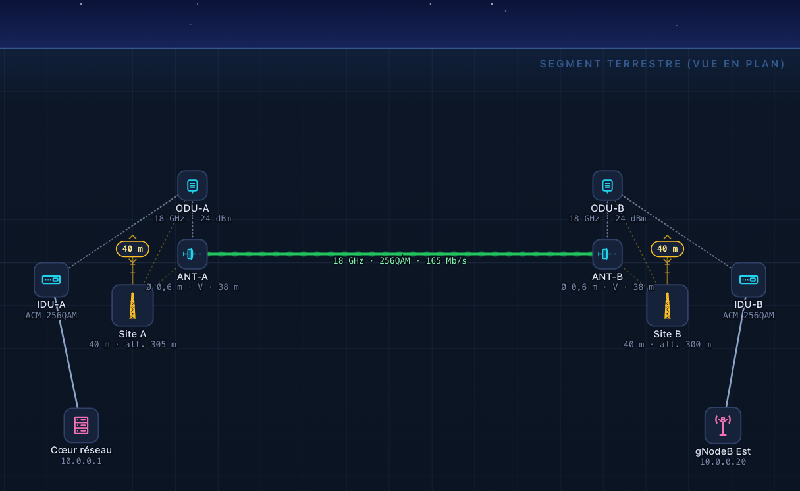
Un bond FH construit (TP 1) : pylônes, antennes, ODU, IDU et faisceau.
MicroWave, BLR & VSAT Lab — Tutoriels3
Tutoriel 3 — Régler un équipement ou un lien
Durée : 15 minObjectif : utiliser l’onglet Paramètres de l’inspecteur
Outil Sélection (V), cliquez sur une ODU : bande, puissance Tx, largeur de canal, canal, demi-bande, pertes de branchement.
Changez la bande (ex. 7 → 18 GHz) : le faisceau change de couleur si la marge devient insuffisante.
Cliquez sur l’antenne : diamètre (0,3 à 2,4 m), polarisation (V, H, V+H pour le XPIC), hauteur de fixation.
Cliquez sur le faisceau : état, distance, débit, configuration (1+0, 1+1, diversité d’espace), lien de secours, lien RPL.
Sans sélection (clic sur le fond) : réglages du projet (titre, origine du plan, climat, objectif de disponibilité, interférences).
Question : citez trois réglages qui modifient le niveau reçu (RSL).
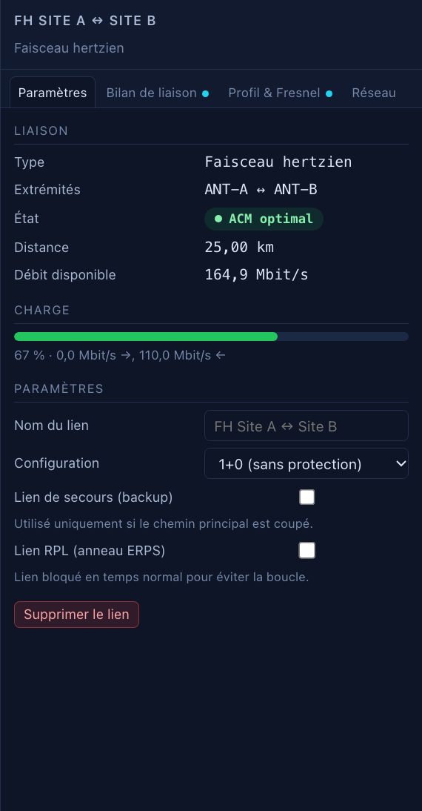
L’onglet Paramètres d’un faisceau (TP 1).
MicroWave, BLR & VSAT Lab — Tutoriels4
Tutoriel 4 — Lire le bilan de liaison
Durée : 20 minObjectif : refaire le calcul du RSL et de la marge
Sélectionnez le faisceau du TP 1, onglet Bilan de liaison. Choisissez le sens (A → B ou B → A).
Relevez dans les cartes : distance, fréquence, RSL, marge au fading, modulation, capacité, disponibilité.
Lisez le calcul pas à pas : gain d’antenne, PIRE, espace libre (FSL), gaz, pluie, RSL, bruit, seuils.
Refaites le calcul du RSL à la main avec les valeurs affichées.
Grandeur
Valeur lue
PIRE
FSL
RSL
Seuil QPSK
Marge avant coupure
RSL = PIRE − FSL − pertes + Grx − Lbranch. Marge = RSL − seuil de la modulation la plus robuste.
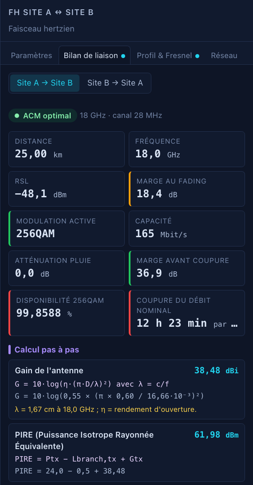
Bilan de liaison d’un bond FH : cartes de synthèse et calcul pas à pas.
MicroWave, BLR & VSAT Lab — Tutoriels5
Tutoriel 5 — Profil de terrain et zone de Fresnel
Durée : 20 minObjectif : dégager la 1re zone de Fresnel
Chargez le TP 2 : une colline est sur le trajet.
Sélectionnez le faisceau, onglet Profil & Fresnel : terrain, courbure terrestre (k = 4/3), ligne de visée, ellipse de Fresnel.
Lisez le dégagement au point critique (en % du rayon de Fresnel) et la perte de diffraction.
Avec « Ajuster les hauteurs », surélevez les pylônes jusqu’à 60 % de dégagement, puis 100 %.
Question : quelle hauteur de pylône faut-il pour 60 % ? pour 100 % ?
Règle : au moins 60 % de la 1re zone de Fresnel dégagés ; rayon r1 = 17,32·√(d1·d2 / (f·d)).
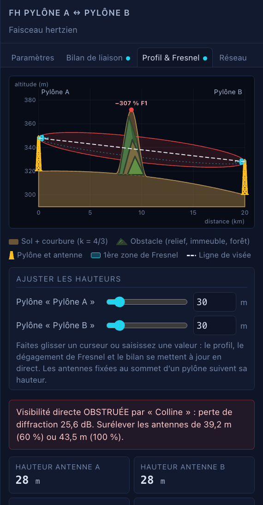
Profil de terrain du TP 2 : colline dans la zone de Fresnel.
MicroWave, BLR & VSAT Lab — Tutoriels6
Tutoriel 6 — Pluie, modulation adaptative et disponibilité
Durée : 20 minObjectif : observer l’ACM pendant un orage
Chargez le TP 3 (bond 15 GHz en 256QAM avec XPIC). Passez en mode Météo & Propagation.
Montez la pluie à 40, 60 puis 80 mm/h : notez la modulation et le débit à chaque palier (journal d’événements).
Cliquez sur Simuler un orage : la pluie monte de 0 à 100 mm/h puis redescend ; l’ACM se replie puis remonte.
Dans le bilan, lisez la disponibilité annuelle (UIT-R P.530) et comparez-la à l’objectif des réglages du projet.
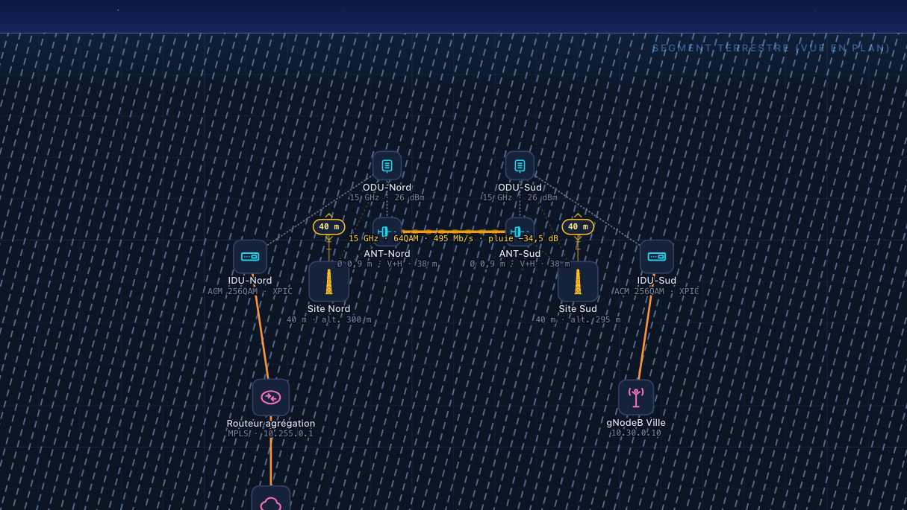
Mode Météo : pluie à 80 mm/h, faisceau en repli de modulation (orange).
Pluie
0 mm/h
40 mm/h
60 mm/h
80 mm/h
Modulation
Débit (Mbit/s)
MicroWave, BLR & VSAT Lab — Tutoriels7
Tutoriel 7 — Station VSAT et pointage
Durée : 25 minObjectif : pointer une parabole et lire le bilan satellite
Chargez le TP 5 (site minier relié au téléport par un satellite GEO en bande Ku).
Sélectionnez la liaison satellite de la station distante, onglet Profil & Fresnel : l’aide au pointage donne azimut, élévation et skew.
Décochez « Pointage automatique » sur l’antenne VSAT et saisissez un azimut décalé de 1° : observez la perte de pointage et l’Eb/N0.
Onglet Bilan de liaison : voies montante et descendante, C/N, Eb/N0, MODCOD DVB-S2X, latence RTT.
Grandeur
Valeur
Azimut · élévation · skew
PIRE de la station
Eb/N0 voie aller
RTT
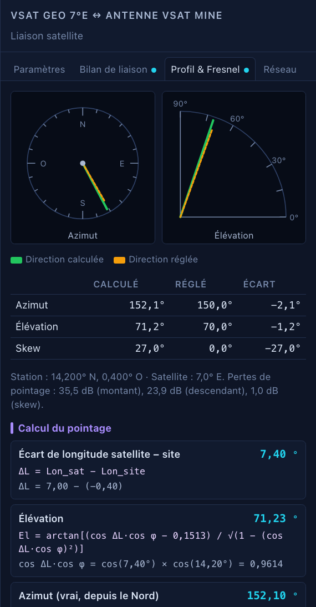
Aide au pointage d’une station VSAT.
Chaîne VSAT : modem — BUC + LNB — antenne VSAT ~~~ satellite ~~~ Hub — routeur. La latence d’un GEO (≈ 520 ms aller-retour) se mesure au ping.
MicroWave, BLR & VSAT Lab — Tutoriels8
Tutoriel 8 — Satellites défilants LEO et MEO
Durée : 20 minObjectif : comparer la latence GEO / LEO, observer les handovers
Chargez le TP 13 (constellation LEO à 550 km).
Sur le satellite, réglez Mouvement = « Défilement réel ». L’horloge apparaît dans la barre du canevas : ▶, vitesse ×60.
Observez l’élévation, la distance, la latence et le décalage Doppler ; au coucher d’un satellite, le terminal bascule sur le suivant (handover).
Diminuez le nombre de satellites par plan : des trous de couverture apparaissent.
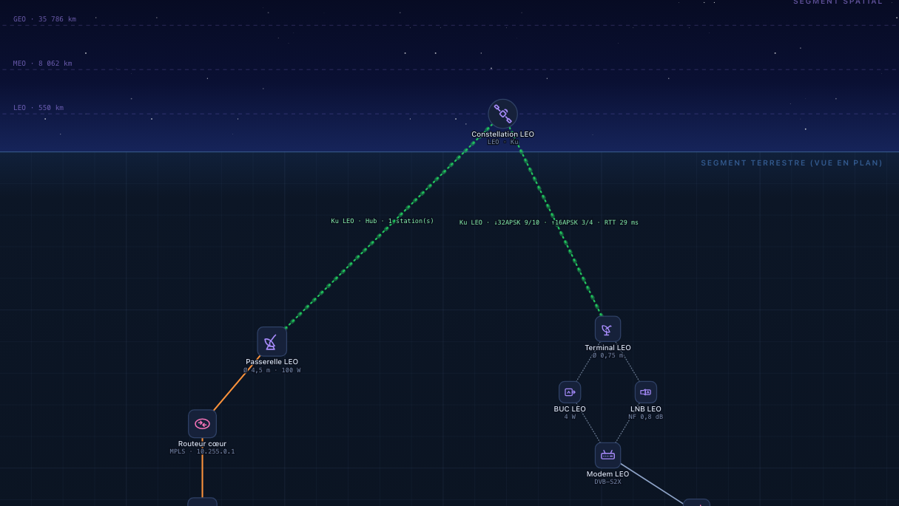
Constellation LEO : terminal et passerelle reliés au satellite servant.
Question : comparez le RTT mesuré avec un satellite GEO et avec la constellation LEO. Pourquoi cet écart ?
MicroWave, BLR & VSAT Lab — Tutoriels9
Tutoriel 9 — Boucle locale radio et VLAN
Durée : 20 minObjectif : raccorder des abonnés et isoler leurs trafics
Chargez le TP 4 : une station de base 3,5 GHz dessert trois entreprises (CPE).
Sélectionnez la station de base : azimut et ouverture du secteur (90° ou 120°). Un CPE hors secteur perd plusieurs dB.
Réglez le VLAN d’accès de chaque CPE (100, 200, 300 : un VLAN par entreprise), puis les VLAN autorisés sur le switch.
Outil Ping (P) entre deux entreprises de VLAN différents : le trafic doit être isolé.
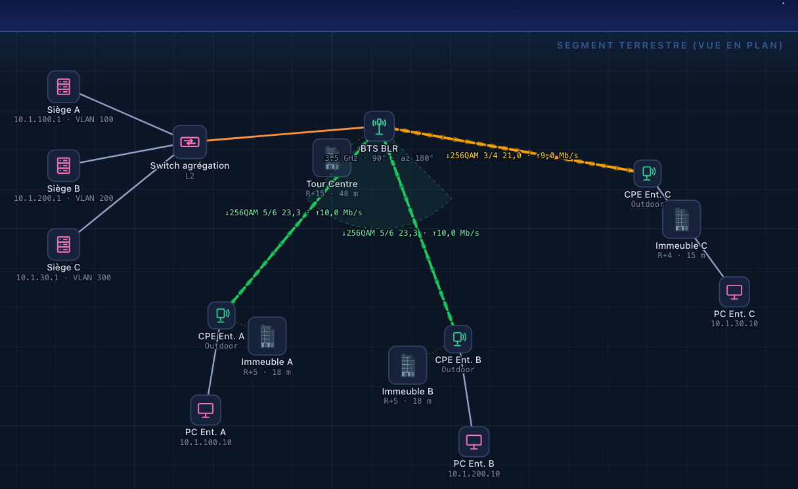
Boucle locale radio du TP 4 : station de base sectorielle et CPE des entreprises.
À retenir : le débit d’un secteur est partagé entre ses abonnés ; chaque client a son VLAN, de bout en bout.
MicroWave, BLR & VSAT Lab — Tutoriels10
Tutoriel 10 — Réseau IP : flux, ping et anneau ERPS
Durée : 25 minObjectif : vérifier la continuité de service sur un anneau
Chargez le TP 6 (anneau FH IP/MPLS avec secours VSAT). Onglet Flux de trafic de la console : chemin, débit, état de chaque service.
Sélectionnez un bond, onglet Réseau : état de l’anneau ERPS, lien RPL, LSP MPLS.
Passez en mode Dépannage, outil Panne (C), coupez un bond : le RPL se débloque, le trafic repasse par l’autre côté.
Coupez un second bond : le site isolé bascule sur le lien de secours VSAT (latence plus élevée).
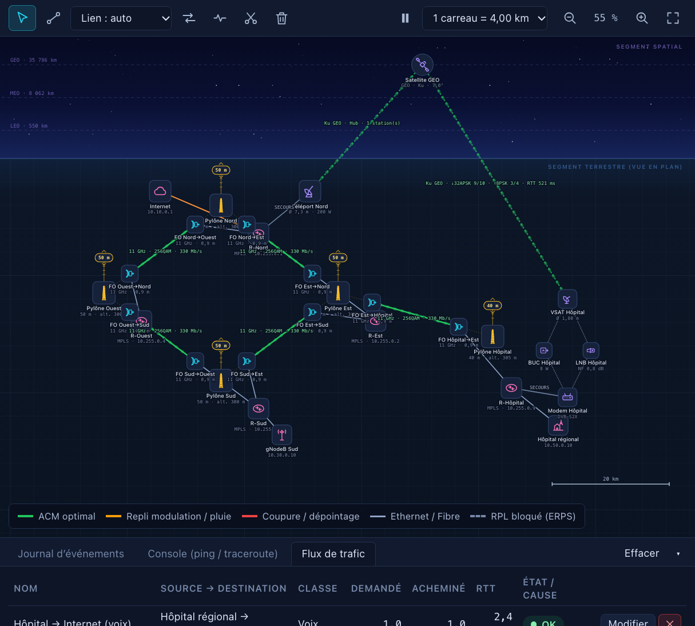
Anneau du TP 6 et tableau des flux de trafic.
MicroWave, BLR & VSAT Lab — Tutoriels11
Tutoriel 11 — Dépanner : voyants, mesures et interventions
Durée : 30 minObjectif : localiser une panne par la mesure avant d’intervenir
Chargez le TP 12 ou le TP 16 (pannes cachées) et passez en mode Dépannage.
Constater : quels services sont coupés ? (flux, ping).
Localiser : traceroute, voyants des équipements, bilan de liaison (« RSL calculé » / « RSL mesuré »).
Intervenir : encadré « Intervention sur site » (remplacer, repointer, refaire le branchement, reprendre le câble) ou correction du réglage erroné.
Vérifier par une nouvelle mesure et noter l’intervention.
Le simulateur ne dit jamais si un élément était en panne : seule la mesure le prouve. Une intervention inutile est pénalisée à l’examen.
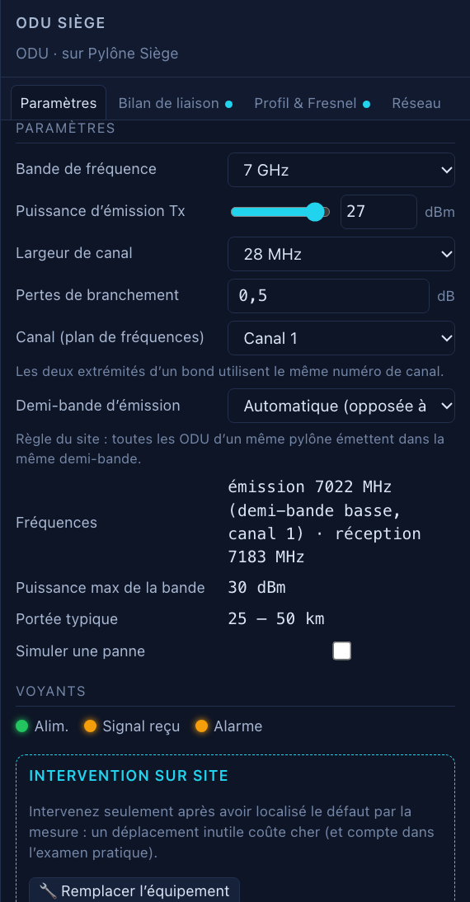
Mode Dépannage : paramètres, voyants et interventions d’une ODU.
Symptôme
Mesure
Cause supposée
Action
Vérification
MicroWave, BLR & VSAT Lab — Tutoriels12
Tutoriel 12 — Recette d’une liaison radio
Durée : 20 minObjectif : comparer mesure et calcul, conclure
Chargez le TP 6. Pour chaque liaison, lisez la valeur mesurée sur l’équipement de réception (onglet Bilan de liaison).
Cliquez sur le fond du canevas, onglet Bilan de liaison : la fiche de recette liste chaque grandeur à contrôler.
Saisissez chaque mesure : l’écart (mesure − calcul) et la conclusion s’affichent.
Cliquez sur Rapport de recette : imprimez-le et signez-le.
Écart
Conclusion
−3 à +3 dB
Conforme
< −3 dB
Non conforme : perte anormale
> +3 dB
Suspect : vérifier la lecture
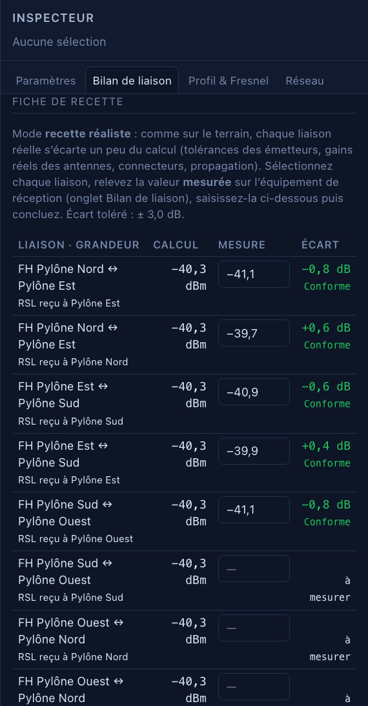
La fiche de recette (onglet Bilan, sans sélection).
MicroWave, BLR & VSAT Lab — Tutoriels13
Tutoriel 13 — Activités, sauvegarde, examen et documentation
Durée : 15 minObjectif : travailler en TP et rendre son travail
La fenêtre des activités : tutoriels guidés, TP, exercices corrigés.
TP : choisissez un TP, Charger la topologie du TP ; les consignes s’affichent dans un panneau flottant et chaque étape est vérifiée automatiquement. 📄 Fiche élève imprime la fiche du TP.
Sauvegarder (Ctrl+S) : fichier .json à rouvrir avec Ouvrir. Le bouton image exporte le schéma (SVG) pour le compte rendu.
Examen : Ouvrir le fichier sujet-….json du professeur, identité, Commencer l’examen ; pendant l’épreuve : 📋 Consignes, Ma copie, 📤 Rendre ma copie (ou Ctrl+S).
Documentation : guide de l’utilisateur, instruments, fiches d’ingénierie, cours, aide-mémoire, avec une recherche.
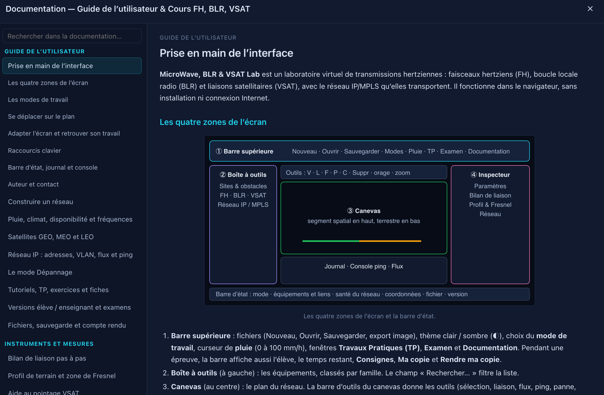
La documentation, classée par rubriques.
MicroWave, BLR & VSAT Lab — Tutoriels14
Fiche mémo — valeurs et formules de référence
Grandeur
Formule / valeur
Puissance
P(dBm) = 10·log(P / 1 mW) ; 1 W = 30 dBm = 0 dBW ; ×2 = +3 dB
Espace libre
FSL = 92,45 + 20·log(d km) + 20·log(f GHz)
Gain d’une parabole
G = 10·log(η·(π·D/λ)²) ; 1,2 m à 7 GHz ≈ 36,5 dBi ; 0,6 m à 15 GHz ≈ 37 dBi
GEO ≈ 520 à 600 ms RTT ; MEO 130 à 150 ms ; LEO 25 à 45 ms
Bandes FH (portée typique)
6 GHz
7/8 GHz
11/13 GHz
15/18 GHz
23 GHz
E-Band
30–60 km
20–50 km
10–30 km
5–20 km
3–10 km
0,5–3 km
Raccourcis
V sélection · L lier · F flux · P ping · C panne · Suppr supprimer · Ctrl+Z / Y annuler / rétablir · Ctrl+S sauvegarder (en examen : rendre la copie) · 0 tout afficher
MicroWave, BLR & VSAT Lab — Tutoriels15
Grille d’auto-évaluation — Je maîtrise MicroWave, BLR & VSAT Lab
Nom : ..............................Classe : ..........
Je sais…
Non
En partie
Oui
repérer les zones de l’écran et changer de mode
☐
☐
☐
construire un bond FH complet (IDU, ODU, antennes, faisceau)
☐
☐
☐
régler la bande, la puissance, le diamètre et la polarisation
☐
☐
☐
lire et refaire le calcul du RSL et de la marge
☐
☐
☐
dégager la zone de Fresnel en ajustant les hauteurs
☐
☐
☐
expliquer l’effet de la pluie et le rôle de l’ACM
☐
☐
☐
lire la disponibilité d’un bond et la comparer à l’objectif
☐
☐
☐
pointer une station VSAT (azimut, élévation, skew)
☐
☐
☐
comparer la latence GEO, MEO et LEO
☐
☐
☐
raccorder des abonnés BLR et les isoler par VLAN
☐
☐
☐
créer un flux, faire un ping et lire un traceroute
☐
☐
☐
expliquer le basculement d’un anneau ERPS et d’un lien de secours
☐
☐
☐
dépanner : constater, localiser par la mesure, intervenir, vérifier
☐
☐
☐
remplir une fiche de recette et conclure sur la conformité
☐
☐
☐
sauvegarder mon travail et rendre une copie d’examen